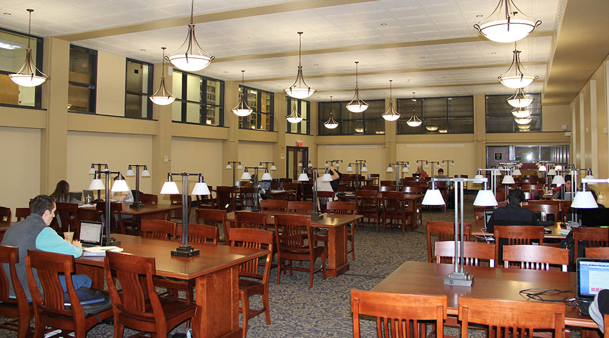

EDCP108M (Concepts and Skills: Math Study Skills and Building Confidence) is a half-semester course offered at the University of Maryland, College Park.
Like all EDCP courses, EDCP108M is geared towards helping students with College and Career Advancement. For EDCP108M in particular, this course is designed for students who are experiencing difficulty in learning math, or for students studying math education. For more information about EDCP108M and other EDCP courses offered throughout the year, click the button to learn more.

As many would likely agree, students are never really taught how to effectively learn and study math, or any subject for that matter. For college level math courses in particular, in becomes exponentially harder for students to learn complex concepts and equations alongside their other classes. Personally, I was one of these students...
That said, this website provides a brief overview of the tips, tricks and resources that I have learned throughout my semester in EDCP108M. Whether you are struggling to study effectively and manage your time or you simply doubt your math abilities, I hope you will be able to benefit from my my experiences and "Most Valuable Math Takeaways!"
First and foremost however, I would recommend taking this online quiz to guage how effectively you currently learn and study. From those results, you can determine what aspects of learning math you need to focus on most. At the start of this course, I will admit that I received a score of 32, which essentially corresponds to "needs work." Through the takeaways of this course however, I truly feel that I have greatly improved my math skills in more ways than one.First things first: What exactly is effective math learning?
Although seemingly trivial, it is important to understand what math learning is in order to know what study techniques you should change, keep and add. Simply put, math learning is the "acquisition of knowledge in mathematics." But in order to be considered effective, this acquisition of knowledge must be tied to three major concepts or domains: Affectiveness, Behavioral and Cognitive. Interestingly enough, these domains are also the learning outcomes of of EDCP108M. Knowing this, let's take a closer look at each one:
This aspect encompasses the physiological components involved in improving learning, such as self-perception, anxiety and understanding of strengths and weaknesses to name a few. For example, positive self-talk can increase learning effectiveness.
While the affectiveness concept focuses on the psychological aspects of learning, the behavioral concept has to do with the physical ones. From simply taking and reviewing notes to managing time and practicing, a lot can be physically done to improve one's math skills.
A mix of the affectiveness and behavioral concepts, the cognitive concept involves obtaining new ways of understanding material. This can be done by practicing critical thinking or trying different techniques to solve the same problem.
To read more about these domains of learning, feel free to visit this University of Dayton article. If you're like me, your perception of math prior to learning about these domains was limited to the cognitive domain. After all, solving problems with different techniques isn't exactly a radically new idea. On the other hand, the affective domain describes a number characteristics that never really occurred to me. Most notably, it was interesting to discover that "Internalizing values," and one's value system can heavily influence the learning process, especially in a social environment.
is very subjective.
While some may prefer to take notes in a variety of colors, others may only use a pen and a highlighter, or simply just a pencil. Using a number of sources to compile my own set of steps for note-taking, I believe that my method not only keeps the note-taker engaged during lecture, but also attentive after lecture.
It is always important to be prepared to take notes in a math class. This includes having a dedicated binder or notebook as opposed to loose-leaf paper and a writing utensil. In addition, it is also important to be awake and ready to listen.
I tend to do so in math classes and in general. For one, writing in pen is simpler easier for me to read and review. In addition, during lectures, I will often try to solve a problem by myself before the professor does so. By crossing out mistakes that I make, verses erasing them, I will better remember not to make those mistakes again.
Put an asterisk before continuing to a new question or section. This is particularly helpful when reviewing notes because I spend more time reviewing and less time figuring out what or where I should be reviewing.
Listening intently means NOT writing down every single detail that the professor says or writes down. Copying down every single thing on the board usually causes me to fall behind and not keep up with what the professor.
Throughout a lecture, a professor will sometimes reveal small important details such “remember this for the exam,” or “this will be helpful for the homework.” Simply jot these down in the top margin of each page.
It is important to review notes after lectures in order to optimize understanding of new concepts. Doing so immediately after will be even more helpful because the concepts are fresh in mind.
For even more tips and tricks to mastering note-taking, you can also take a look at this wikiHow article: How to Take Perfect Math Notes

The above notes were taken from my CMSC351 class this past semester using my described note-taking steps. Each of these steps appeals to the Affective domain of learning due to the physical nature of taking notes; from physically being present in lecture to highlighting the important details that you wish to remember later, every action encourages you to better remember new material when you learn it.
Studying is perhaps the most intensive aspect of learning math and certainly the most time consuming. As a result, it is important to budget time wisely. Ultimately, the name of the game is "Efficiency." In order be as efficient as possible, you should always have these three main goals of studying in mind:
One relatively simple way to maximize efficiency is to create a study plan to map out how much time goes into what. Although it it not necessary to be as detailed as this, a sample study
plan can be revealed below. In terms of studying alone, making study plans has been my biggest takeaway from EDCP108M. Each day in fact, I will write down everything I have to do and the approximate
time it should take me to complete. By physically recording this information and mentally making sure that I do not exceed my alotted time by too much, I subconsciously train my Affective and Behavioral
domains of learning to be more efficient when it comes to studying.

For general studying, the following video is a great guide to start off with.
Last but certainly not least in terms of study is the concept of deep processing. Deep processing is a collection of different strategies used to more effectively learn and study. One such strategy that I can apply is overlearning, or "continuing to study beyond just knowing information to where it can be recalled quickly and easily." For instance, after finishing the assigned homework problems from the textbook in my stat class, I could do addition problems in order for formulas and other concepts to feel like second nature. The following video will give a further overview of the concept.
Although it it may be true that studying is the most time consuming aspect of learning math, I would venture to say that
taking exams is the most frightning aspect. At this point, given that you have studied and prepared well, it is all psychological. For me personally,
exams are extremely challenging due to my nervousness and fear of failing. That said, I am not alone. In fact, it seems as though most people have to
overcome this general fear of failure in order to strengthen their Behavioral domain of learning. In addition to my own word, click the image below
and consider the words of these students as well.
In the end, my main takeaway from taking exams, is to relax and keep up a positive self-talk by
telling myself that I have prepared to the best of my ability and I'm going to do my best.

The University of Maryland has a wide variety of helpful on-campus math resources for students to explore and use.
In times of doubt and confusionm, it is logical to take advantage of them before it's too late! Personally, I have always been
guilty of trying to figure out concepts or tough homework problems on my own. Needless to say, I often find myself wasting
time just digging through a textbook or scouring the internet for answers, when I could be saving time by going to office hours
or signing up for one of the many tutoring opportunities below.
Furthermore, my main takeaway from math campus resources is that attending a tutoring session is a great way to exercise the cognitive
domain of learning. Given that a tutor has a different method of solving a problem, it is possible to gain an overall better understand
of what technique to approach similar problems with in the future.
Like the UMD Writing Center, the Math Tutoring Center provides a nice, quiet environment to work directly with a tutor. Many math and math related courses are available for tutoring!
Make an Appointment"The Guided Study Sessions (GSS) Program offers FREE, regularly scheduled study sessions for traditionally difficult courses."
View Offered CoursesThe Math Department itself provides a free tutoring service for 100 and 200 level math courses. Tutors are standing by everyday, every week.
See Available TimesTeaching Assistants and courses instructor typically hold weekly office hours for students to drop by.
For locations and times, please refer to your respective course website or syllabus.
"The Math Success Program provides math coaching services and through these services, promotes a positive and encouraging environment of study where students can practice skills and gain an understanding of math"
Find Out More"This is a free, walk-in tutorial program that covers most key courses in Writing, Mathematics, Biology, Chemistry, and Economics, among other courses."
Get More Information*IMPORTANT NOTE: Although tutoring sessions are certainly beneficial overall, try to seek help sparingly! As Peter Parker's Uncle Ben once said, "with great power comes great responsibility"; despite being free and open almost all week campus-resources should not be exploited and relied upon for help on every single assignment or new concept. The consequence of doing so is that you would not be able to learn by yourself. As a result, these resources should never supplement the affective and behavioral aspects of learning, but rather work with them.